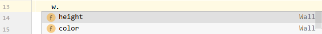

pyfields¶
Define fields in python classes. Easily.


pyfields is now automatically supported by autoclass ! See here for details.
pyfields provides a simple and elegant way to define fields in python classes. With pyfields you explicitly define all aspects of a field (default value/factory, type, validators, converters, documentation...) in a single place, and can refer to it from other places.
It is designed with development freedom as primary target:
-
code segregation. Everything is in the field, not in
__init__, not in__setattr__. -
absolutely no constraints. Your class does not need to use type hints. You can use python 2 and 3.5. Your class is not modified behind your back:
__init__and__setattr__are untouched. You do not need to decorate your class. You do not need your class to inherit from anything. This is particularly convenient for mix-in classes, and in general for users wishing to stay in control of their class design. -
no performance loss by default. If you use
pyfieldsto declare fields without adding validators nor converters, instance attributes will be replaced with a native python attribute on first access, preserving the same level of performance than what you are used to.
It provides many optional features that will make your object-oriented developments easier:
-
all field declarations support type hints and docstring,
-
optional fields can have default values but also default values factories (such as "if no value is provided, copy this other field")
-
adding validators and converters to a field does not require you to write complex logic nor many lines of code. This makes field access obviously slower than the default native implementation but it is done field by field and not on the whole class at once, so fast native fields can coexist with slower validated ones (segregation principle).
-
initializing fields in your constructor is very easy and highly customizable
Finally, it offers an API that other libraries can leverage to get the list of fields. For example autoclass now leverages pyfields to automatically add hash/dict/eq/repr to your class.
If your first reaction is "what about attrs / dataclasses / pydantic / characteristic / traits / traitlets / ...", well all of these inspired pyfields a great deal, but all of these have stronger constraints on the class - which I did not want. Please have a look here for a complete list of inspirators.
Installing¶
> pip install pyfields
For advanced type checking capabilities, pyfields requires that typeguard or pytypes is installed. Note that type checking performance (speed) mostly depends on the choice of type checking library. Not installing any will be faster, but will not support all of the typing constructs. Let's install typeguard for now:
> pip install typeguard
Usage¶
Below we show a few prototypical examples to illustrate how versatile pyfields is. See usage for a more detailed, step-by-step explanation of all features.
compliance with python 2's old-style classes
All examples in this doc assume python 3 and therefore show new-style classes without explicit inheritance of object, for readability. If you use python 2 do not forget to explicitly use new-style classes otherwise some features will not be available (the ones where a setter on the field is required: validation, conversion, read-only).
1. Defining a field¶
A field is defined as a class member using the field() method. The idea (not new) is that you declare in a single place all aspects related to each field. For mandatory fields you do not need to provide any argument. For optional fields, you will typically provide a default value or a default_factory (we will see that later).
For example let's create a Wall class with one mandatory height and one optional color field:
from pyfields import field
class Wall:
height: int = field(doc="Height of the wall in mm.")
color: str = field(default='white', doc="Color of the wall.")
Compliance with python < 3.6
If you use python < 3.6 you know that PEP484 type hints can not be declared as shown above. However you can provide them as type comments, or using the type_hint argument (recommended if you wish to use type validation).
a - Field vs. Python attr¶
By default when you use field(), nothing more than a "lazy field" is created on your class. This field will only be activated when you access it on an instance. That means that you are free to implement __init__ as you wish, or even to rely on the default object constructor to create instances:
# instantiate using the default `object` constructor
w = Wall()
No exception here even if we did not provide any value for the mandatory field height ! Although this default behaviour can look surprising, you will find that this feature is quite handy to define mix-in classes with attributes but without constructor. See mixture for discussion. Of course if you do not like this behaviour you can very easily add a constructor.
Until it is accessed for the first time, a field is visible on an instance with dir() (because its definition is inherited from the class) but not with vars() (because it has not been initialized on the object):
>>> dir(w)[-2:]
['color', 'height']
>>> vars(w)
{}
As soon as you access it, a field is replaced with a standard native python attribute, visible in vars:
>>> w.color # optional field: the default value is used on first 'read' access
'white'
>>> vars(w)
{'color': 'white'}
Of course mandatory fields must be initialized:
>>> w.height # trying to read an uninitialized mandatory field
pyfields.core.MandatoryFieldInitError: \
Mandatory field 'height' has not been initialized yet on instance <...>.
>>> w.height = 12 # initializing mandatory field explicitly
>>> vars(w)
{'color': 'white', 'height': 12}
Your IDE (e.g. PyCharm) should recognize the name and type of the field, so you can already refer to it easily from other code using autocompletion:

b - Default value factory¶
We have seen above how to define an optional field by providing a default value. The behaviour with default values is the same than python's default: the same value is used for all objects. Therefore if your default value is a mutable object (e.g. a list) you should not use this mechanism, otherwise the same value will be shared by all instances that use the default:
class BadPocket:
items = field(default=[])
>>> p = BadPocket()
>>> p.items.append('thing')
>>> p.items
['thing']
>>> g = BadPocket()
>>> g.items
['thing'] # <--- this is not right !
To cover this use case and many others, you can use a "default value factory". A default value factory is a callable with a single argument: the object instance. It will be called everytime a default value is needed for a field on an object. You can either provide your own in the constructor:
class Pocket:
items = field(default_factory=lambda obj: [])
or use the provided @<field>.default_factory decorator:
class Pocket:
items = field()
@items.default_factory
def default_items(self):
return []
Finally, you can use the following built-in helper functions to cover most common cases:
copy_value(<value>)returns a factory that will create copies of the valuecopy_field(<field_or_name>)returns a factory that will create copies of the given object fieldcopy_attr(<attr_name>)returns a factory that will create copies of the given object attribute (not necessary a field)
c - Read-only fields¶
You can define fields that can only be set once:
class User:
name = field(read_only=True)
u = User()
u.name = "john"
print("name: %s\n" % u.name)
u.name = "john2"
yields
name: john
pyfields.core.ReadOnlyFieldError:
Read-only field '<...>.User.name' has already been initialized on instance
<<...>.User object at 0x000001CA70FA25F8> and cannot be modified anymore.
Of course this makes more sense when an appropriate constructor is defined on the class as we'll see below, but it also works independently.
Optional fields can also be "read-only" of course. But remember that in that case, reading the field on a brand new object will assign it to its default value - therefore is will not modifiable anymore:
class User:
name = field(read_only=True, default="dummy")
u = User()
print("name: %s\n" % u.name)
u.name = "john"
yields
name: dummy
pyfields.core.ReadOnlyFieldError:
Read-only field '<...>.User.name' has already been initialized on instance
<<...>.User object at 0x000001ED05E22CC0> and cannot be modified anymore.
In practice if you have your own constructor or if you generate one using the methods below, it will work without problem. But when debugging your constructor with an IDE that automatically calls "repr" on your object you might have to remember it and take extra care.
d - Type validation¶
You can add type validation to a field by setting check_type=True.
class Wall:
height: int = field(check_type=True, doc="Height of the wall in mm.")
color: str = field(check_type=True, default='white', doc="Color of the wall.")
yields
>>> w = Wall()
>>> w.height = 1
>>> w.height = '1'
TypeError: Invalid value type provided for 'Wall.height'. \
Value should be of type 'int'. Instead, received a 'str': '1'
By default the type used for validation is the one provided in the annotation. If you use python < 3.6 or wish to override the annotation, you can explicitly fill the type_hint argument in field(). It supports both a single type or an iterable of alternate types (e.g. (int, str)). Note that PEP484 type comments are not taken into account - indeed it is not possible for python code to access type comments without source code inspection.
PEP484 typing support
Now type hints relying on the typing module (PEP484) are correctly checked using whatever 3d party type checking library is available (typeguard is first looked for, then pytypes as a fallback). If none of these providers are available, a fallback implementation is provided, basically flattening Unions and replacing TypeVars before doing is_instance. It is not guaranteed to support all typing subtleties.
e - Nonable fields¶
Definition
A nonable field is a field that can be set to None. It can be mandatory, or optional. By default, pyfields tries to guess if a field is nonable :
-
if a type hint is provided and it is PEP484
typing.Optional[...], then this explicitly means that the fields is nonable. (Note: the choice of this nameOptionalis terrible but it is like that, see this discussion -
if the field is optional with a default value of
None, then this implicitly means that the field is nonable. This is not the recommended way anymore but it has the advantage of being compact, so it is supported bypyfields. -
in all other cases,
pyfieldscan not really tell and sets the field to nonable=UNKNOWN.
You can override this behaviour by explicitly stating field(nonable=True) or field(nonable=False).
See also this stack overflow answer.
Effect
When a field is known to be nonable, all of its type checks and validators are skipped when None is received.
When a field is forced explicitly to nonable=False, by default nothing happens, this is just declarative. However as soon as the field has type checking or validation activated, then a NoneError will be raised when None is received.
f - Value validation¶
You can add value (and type) validation to a field by providing validators. pyfields relies on valid8 for validation, so the basic definition of a validation function is the same: it should be a <callable> with signature f(value), returning True or None in case of success.
A validator consists in a base validation function, with an optional error message and an optional failure type. To specify all these elements, the supported syntax is the same than in valid8:
-
For a single validator, either provide a
<callable>or a tuple(<callable>, <error_msg>),(<callable>, <failure_type>)or(<callable>, <error_msg>, <failure_type>). See here for details. -
For several validators, either provide a list or a dictionary. See here for details.
An example is probably better to picture this:
from mini_lambda import x
from valid8.validation_lib import is_in
colors = {'white', 'blue', 'red'}
class Wall:
height: int = field(validators={'should be a positive number': x > 0,
'should be a multiple of 100': x % 100 == 0},
doc="Height of the wall in mm.")
color: str = field(validators=is_in(colors),
default='white',
doc="Color of the wall.")
yields
>>> w = Wall()
>>> w.height = 100
>>> w.height = 1
valid8.entry_points.ValidationError[ValueError]:
Error validating [<...>.Wall.height=1].
At least one validation function failed for value 1.
Successes: ['x > 0'] / Failures: {
'x % 100 == 0': 'InvalidValue: should be a multiple of 100. Returned False.'
}.
>>> w.color = 'magenta'
valid8.entry_points.ValidationError[ValueError]:
Error validating [<...>.Wall.color=magenta].
NotInAllowedValues: x in {'blue', 'red', 'white'} does not hold
for x=magenta. Wrong value: 'magenta'.
For advanced validation scenarios you might with your validation callables to receive a bit of context. pyfields supports that the callables accept one, two or three arguments for this (where valid8 supports only 1): f(val), f(obj, val), and f(obj, field, val).
For example we can define walls where the width is a multiple of the length:
from valid8 import ValidationFailure
class InvalidWidth(ValidationFailure):
help_msg = 'should be a multiple of the height ({height})'
def validate_width(obj, width):
if width % obj.height != 0:
raise InvalidWidth(width, height=obj.height)
class Wall:
height: int = field(doc="Height of the wall in mm.")
width: str = field(validators=validate_width,
doc="Width of the wall in mm.")
Finally, in addition to the above syntax, pyfields support that you add validators to a field after creation, using the @field.validator decorator:
class Wall:
height: int = field(doc="Height of the wall in mm.")
width: str = field(doc="Width of the wall in mm.")
@width.validator
def width_is_proportional_to_height(self, width_value):
if width_value % self.height != 0:
raise InvalidWidth(width_value, height=self.height)
As for all validators, the signature of the decorated function should be either (value), (obj/self, value), or (obj/self, field, value).
Several such decorators can be applied on the same function, so as to mutualize implementation. In that case, you might wish to use the signature with 3 arguments so as to easily debug which field is being validated:
class Wall:
height: int = field(doc="Height of the wall in mm.")
width: str = field(doc="Width of the wall in mm.")
@height.validator
@width.validator
def width_is_proportional_to_height(self, width_value):
if width_value % self.height != 0:
raise InvalidWidth(width_value, height=self.height)
See API reference for details on @<field>.validator.
See valid8 documentation for details about the syntax and available validation lib.
g - Converters¶
You can add converters to a field by providing converters.
A Converter consists in a conversion function, with an optional name, and an optional acceptance criterion.
-
The conversion function should be a callable with signature
f(value),f(obj/self, value), orf(obj/self, field, value), returning the converted value in case of success and raising an exception in case of converion failure. -
The optional acceptance criterion can be a type, or a callable. When a type is provided,
isinstanceis used as the callable. The definition for the callable is exactly the same than for validation callables, see previous section. In addition, one can use a wildcard'*'orNoneto denote "accept everything". In that case acceptance is basically reduced to the conversion function raising exceptions when it can not convert values.
To add converters on a field using field(converters=...), the supported syntax is the following:
-
For a single converter, either provide a
Converter, a<conversion_callable>, a tuple(<accepted_type>, <conversion_callable>), or a tuple(<acceptance_callable>, <conversion_callable>). -
For several converters, either provide a list of elements above, or a dictionary. In case of a dictionary, the key is
<accepted_type>/<acceptance_callable>, and the value is<conversion_callable>.
For example
from pyfields import field
class Foo:
f = field(type_hint=int, converters=int)
g = field(type_hint=int, converters={str: lambda s: len(s),
'*': int})
When a new value is set on a field, all of its converters are first scanned in order. Everytime a converter accepts a value, it is applied to convert it. The process stops at the first successful conversion, or after all converters have been tried. The obtained value (either the original one or the converted one) is then passed as usual to the validators (see previous section).
As for validators, you can easily define converters using a decorator @<field>.converter. As for all converters, the signature of the decorated function should be either (value), (obj/self, value), or (obj/self, field, value).
Several such decorators can be applied on the same function, so as to mutualize implementation. In that case, you might wish to use the signature with 3 arguments so as to easily debug which field is being validated:
class Foo:
m = field(type_hint=int, check_type=True)
m2 = field(type_hint=int, check_type=True)
@m.converter(accepts=str)
@m2.converter
def from_anything(self, field, value):
print("converting a value for %s" % field.qualname)
return int(value)
You can check that everything works as expected:
>>> o = Foo()
>>> o.m2 = '12'
converting a value for Foo.m2
>>> o.m2 = 1.5
converting a value for Foo.m2
>>> o.m = 1.5 # doctest: +NORMALIZE_WHITESPACE
Traceback (most recent call last):
...
TypeError: Invalid value type provided for 'Foo.m'. Value should be of type <class 'int'>.
Instead, received a 'float': 1.5
Finally since debugging conversion issues might not be straightforward, a special trace_convert function is provided to output details about the outcome of each converter's acceptance and conversion step. This function is also available as a method of the field objects (obtained from the class).
m_field = Foo.__dict__['m']
converted_value, details = m_field.trace_convert(1.5)
print(details)
h - Native vs. Descriptor¶
field() by default creates a so-called native field. This special construct is designed to be as fast as a normal python attribute after the first access, so that performance is not impacted. This high level of performance has a drawback: validation and conversion are not possible on a native field.
So when you add type or value validation, or conversion, to a field, field() will automatically create a descriptor field instead of a native field. This is an object relying on the python descriptor protocol. Such objects have slower access time than native python attributes but provide convenient hooks necessary to perform validation and conversion.
For experiments, you can force a field to be a descriptor by setting native=False:
from pyfields import field
class Foo:
a = field() # a native field
b = field(native=False) # a descriptor field
We can easily see the difference (note: direct class access Foo.a is currently forbidden because of this issue):
>>> Foo.__dict__['a']
<NativeField: <...>.Foo.a>
>>> Foo.__dict__['b']
<DescriptorField: <...>.Foo.a>
And measure the difference in access time:
import timeit
f = Foo()
def set_a(): f.a = 12
def set_b(): f.b = 12
def set_c(): f.c = 12
ta = timeit.Timer(set_a).timeit()
tb = timeit.Timer(set_b).timeit()
tc = timeit.Timer(set_c).timeit()
print("Average time (ns) setting the field:")
print("%0.2f (normal python) ; %0.2f (native field) ;"
" %0.2f (descriptor field)" % (tc, ta, tb))
yields (results depend on your machine):
Average time (ns) setting the field:
0.09 (normal python) ; 0.09 (native field) ; 0.44 (descriptor field)
Why are native fields so fast ?
Native fields are implemented as a "non-data" python descriptor that overrides itself on first access. So the first time the attribute is read, a small python method call extra cost is paid but the attribute is immediately replaced with a normal attribute inside the object __dict__. That way, subsequent calls use native python attribute access without overhead. This trick was inspired by werkzeug's @cached_property.
Adding validators or converters to native fields
If you run python 3.6 or greater and add validators or converters after field creation (typically using decorators), field will automatically replace the native field with a descriptor field. However with older python versions this is not always possible, so it is recommended that you explicitly state native=False.
2. Adding a constructor¶
pyfields provides you with several alternatives to add a constructor to a class equipped with fields. The reason why we do not follow the Zen of python here ("There should be one-- and preferably only one --obvious way to do it.") is to recognize that different developers may have different coding style or philosophies, and to be as much as possible agnostic in front of these.
a - make_init¶
make_init is the most compact way to add a constructor to a class with fields. With it you create your __init__ method in one line:
from pyfields import field, make_init
class Wall:
height: int = field(doc="Height of the wall in mm.")
color: str = field(default='white', doc="Color of the wall.")
__init__ = make_init()
By default, all fields will appear in the constructor, in the order of appearance in the class and its parents, following the mro (method resolution order, the order in which python looks for a method in the hierarchy of classes). Since it is not possible for mandatory fields to appear after optional fields in the signature, all mandatory fields will appear first, and then all optional fields will follow.
The easiest way to see the result is probably to look at the help on your class:
>>> help(Wall)
Help on class Wall in module <...>:
class Wall(builtins.object)
| Wall(height, color='white')
| (...)
or you can inspect the method:
>>> help(Wall.__init__)
Help on function __init__ in module <...>:
__init__(self, height, color='white')
The `__init__` method generated for you when you use `make_init`
You can check that your constructor works as expected:
>>> w = Wall(2)
>>> vars(w)
{'color': 'white', 'height': 2}
>>> w = Wall(color='blue', height=12)
>>> vars(w)
{'color': 'blue', 'height': 12}
>>> Wall(color='blue')
TypeError: __init__() missing 1 required positional argument: 'height'
If you do not wish the generated constructor to expose all fields, you can customize it by providing an explicit ordered list of fields. For example below only height will be in the constructor:
from pyfields import field, make_init
class Wall:
height: int = field(doc="Height of the wall in mm.")
color: str = field(default='white', doc="Color of the wall.")
# only `height` will be in the constructor
__init__ = make_init(height)
The list can contain fields defined in another class, typically a parent class:
from pyfields import field, make_init
class Wall:
height: int = field(doc="Height of the wall in mm.")
class ColoredWall(Wall):
color: str = field(default='white', doc="Color of the wall.")
__init__ = make_init(Wall.height)
Note: a pending issue prevents the above example to work, you have to use Wall.__dict__['height'] instead of Wall.height to reference the field from the other class.
Finally, you can customize the created constructor by declaring a post-init method as the post_init_fun argument. This is roughly equivalent to @init_fields so we do not present it here, see documentation.
b - @init_fields¶
If you prefer to write an init function as usual, you can use the @init_fields decorator to augment this init function's signature with all or some fields.
from pyfields import field, init_fields
class Wall:
height = field(doc="Height of the wall in mm.") # type: int
color = field(default='white', doc="Color of the wall.") # type: str
@init_fields
def __init__(self, msg='hello'):
"""
Constructor. After initialization, some print message is done
:param msg: the message details to add
"""
print("post init ! height=%s, color=%s, msg=%s" % (self.height, self.color, msg))
self.non_field_attr = msg
Note: as you can see in this example, you can of course create other attributes in this init function (done in the last line here with self.non_field_attr = msg). Indeed, declaring fields in a class do not "pollute" the class, so you can do anything you like as usual.
You can check that the resulting constructor works as expected:
>>> help(Wall)
Help on class Wall in module <...>:
class Wall(builtins.object)
| Wall(height, msg='hello', color='white')
...
>>> w = Wall(1, 'hey')
post init ! height=1, color=white, msg=hey
>>> vars(w)
{'height': 1, 'color': 'white', 'non_field_attr': 'hey'}
Note on the order of arguments in the resulting __init__ signature: as you can see, msg appears between height and color in the signature. This is because all mandatory arguments appear first, then the optionals - and within each group, the user-provided ones (e.g. msg) appear first. You can change this behaviour by setting init_args_before=False. See API reference for details.
3. Simplifying¶
a - @autofields¶
Do you think that the above is still too verbose to define a class ? You can use @autofields to create fields and the constructor for you :
from pyfields import autofields
from typing import List
@autofields
class Item:
name: str
@autofields
class Pocket:
size: int
items: List[Item] = []
# test that the constructor works correctly
p = Pocket(size=2)
assert p.size == 2
p.items.append(Item(name="a_name"))
Note that members that are already fields are not further transformed. Therefore you can still use field() on some members, for example if you need to specify custom validators, converters, or default factory.
@autofields is just syntactic sugar for field() and make_init() - for example the Pocket class defined above is completely equivalent to:
from pyfields import field, copy_value, make_init
class Pocket:
size = field(type_hint=int)
items = field(type_hint=List[Item],
default_factory=copy_value([]))
__init__ = make_init()
By default type checking is not enabled on the generated fields, but you can enable it with @autofields(check_types=True). You can also disable constructor creation with @autofields(make_init=False). See API reference for details.
b - VTypes¶
Instead of registering validators in the field, you can now use vtypes. That way, everything is in the type: type checking AND value validation.
from pyfields import field
from vtypes import VType
class NonEmpty(VType):
"""A 'non empty' validation type"""
__validators__ = {'should be non empty': lambda x: len(x) > 0}
class NonEmptyStr(NonEmpty, str):
"""A 'non empty string' validation type"""
pass
class Item:
name: NonEmptyStr = field(doc="the field name")
Of course you can combine it with @autofields - do not forget check_types=True so that typechecking is enabled:
from pyfields import autofields
@autofields(check_types=True)
class Item:
name: NonEmptyStr
pytypes does not currently support vtype so in order to benefit from this feature, you should either install typeguard or uninstall pytypes (to let the default pyfields type checker take over). See this issue.
4. Misc.¶
API¶
pyfields offers an API so that other libraries can inspect the fields: get_fields, yield_fields, has_fields, get_field. See API reference for details.
hash, dict, eq, repr¶
autoclass is now compliant with pyfields. So you can use @autoclass, or @autorepr, @autohash, @autodict... on the decorated class. That way, your fields definition is directly reused for most of the class behaviour.
from autoclass import autoclass
from pyfields import field
@autoclass
class Foo:
msg: str = field()
age: int = field(default=12)
foo = Foo(msg='hello')
print(foo) # automatic string representation
print(dict(foo)) # automatic dict view
assert foo == Foo(msg='hello', age=12) # automatic equality comparison
assert foo == {'msg': 'hello', 'age': 12} # automatic eq comparison with dicts
yields
Foo(msg='hello', age=12)
{'msg': 'hello', 'age': 12}
See here for details.
Slots¶
You can use pyfields if your class has __slots__. You will simply have to use an underscore in the slot name corresponding to a field: _<field_name>. For example:
class WithSlots:
__slots__ = ('_a',)
a = field()
Since from python documentation, "class attributes cannot be used to set default values for instance variables defined by __slots__", native fields are not supported with __slots__. If you run python 3.6 or greater, field will automatically detect that a field is used on a class with __slots__ and will replace the native field with a descriptor field. However with older python versions this is not always possible, so it is recommended that you explicitly state native=False.
Note that if your class is a dual class (meaning that it declares a slot named __dict__), then native fields are supported and you do not have anything special to do (not even declaring a slot for the field).
Main features / benefits¶
See top of the page
See Also¶
This library was inspired by:
Others¶
Do you like this library ? You might also like my other python libraries
Want to contribute ?¶
Details on the github page: https://github.com/smarie/python-pyfields